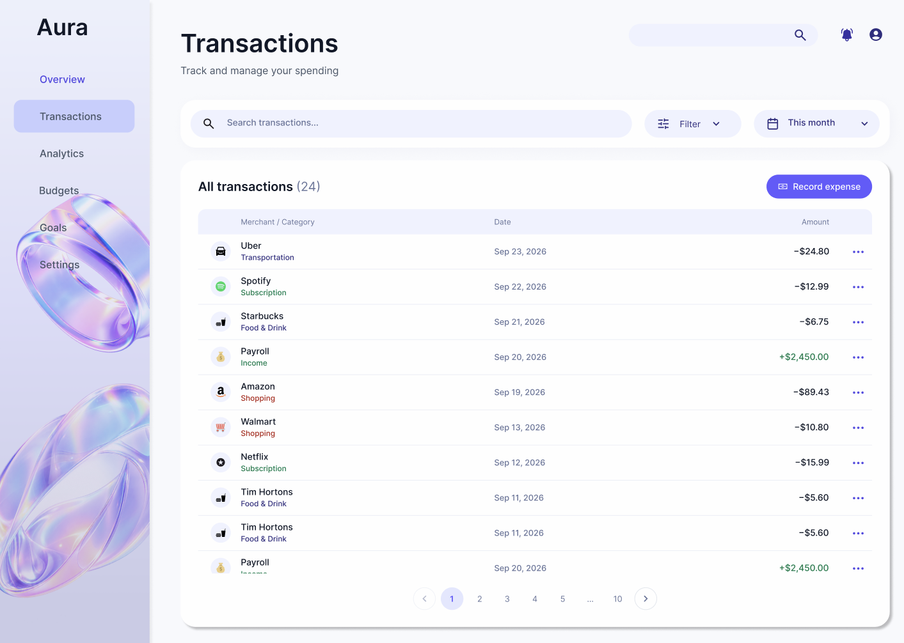
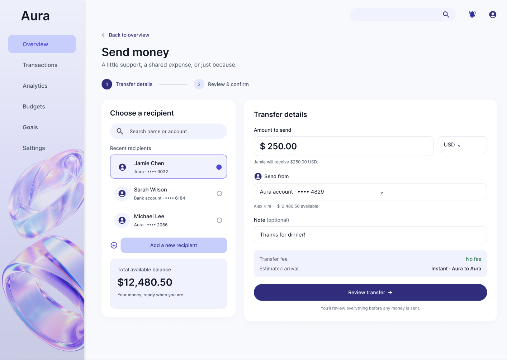
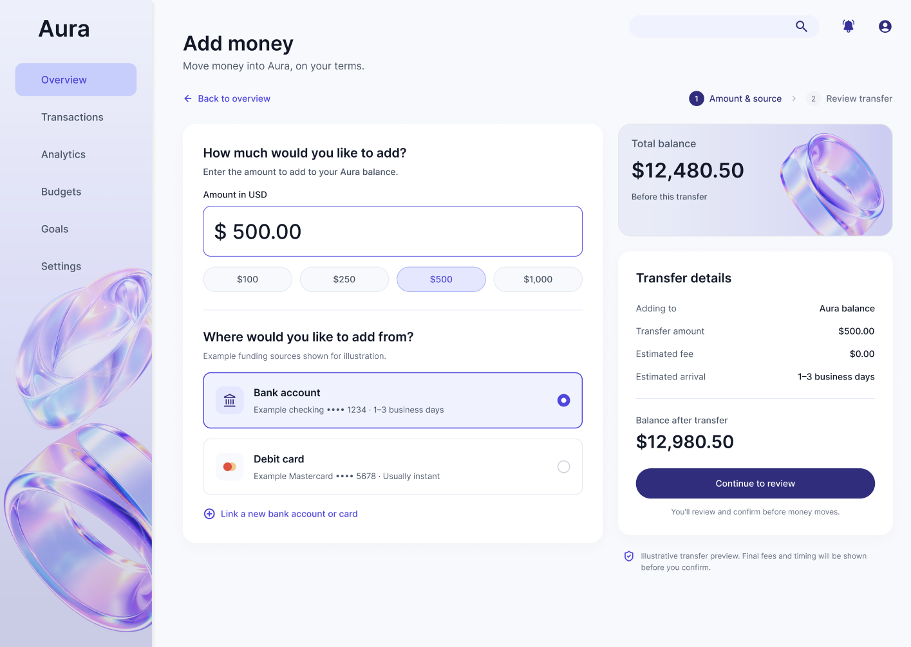
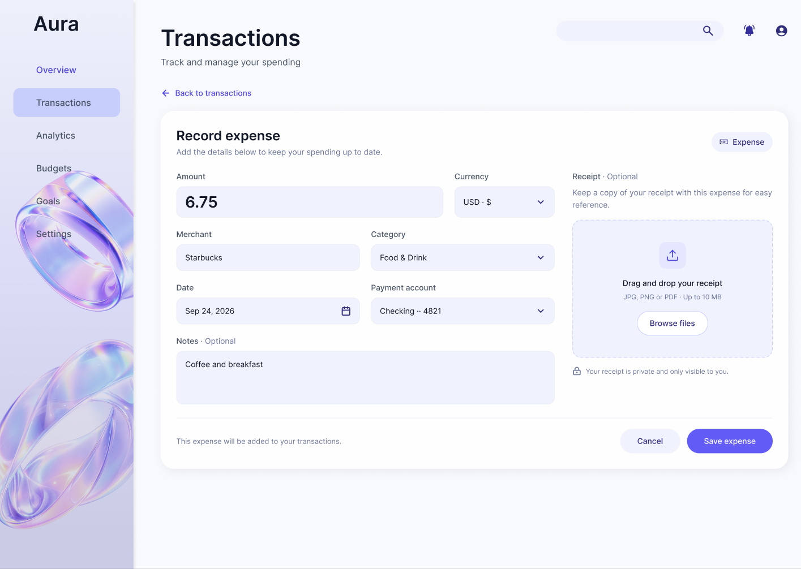
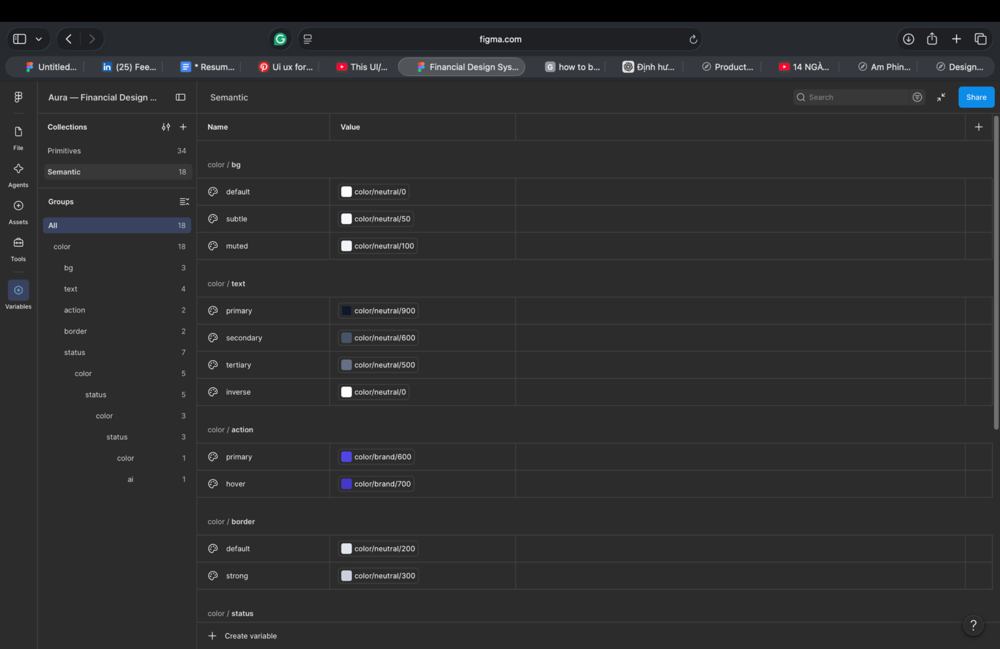
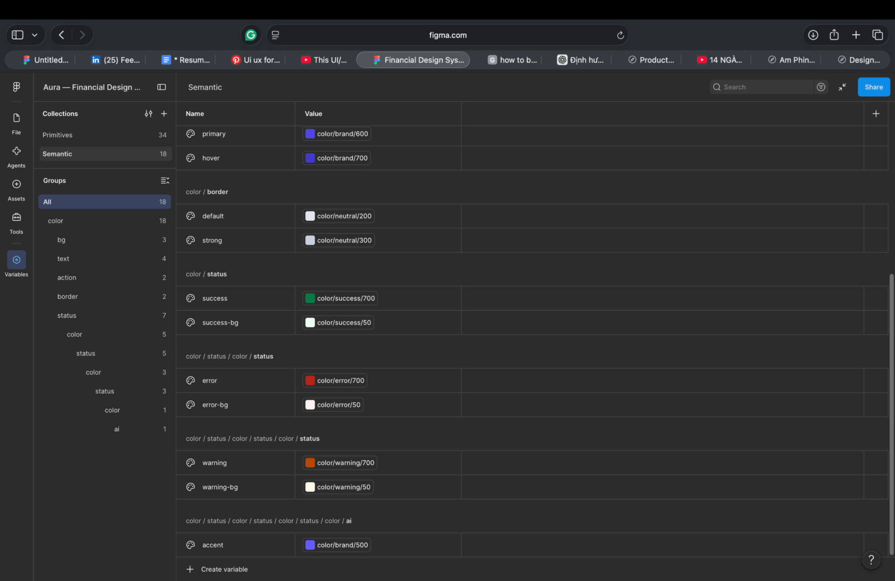
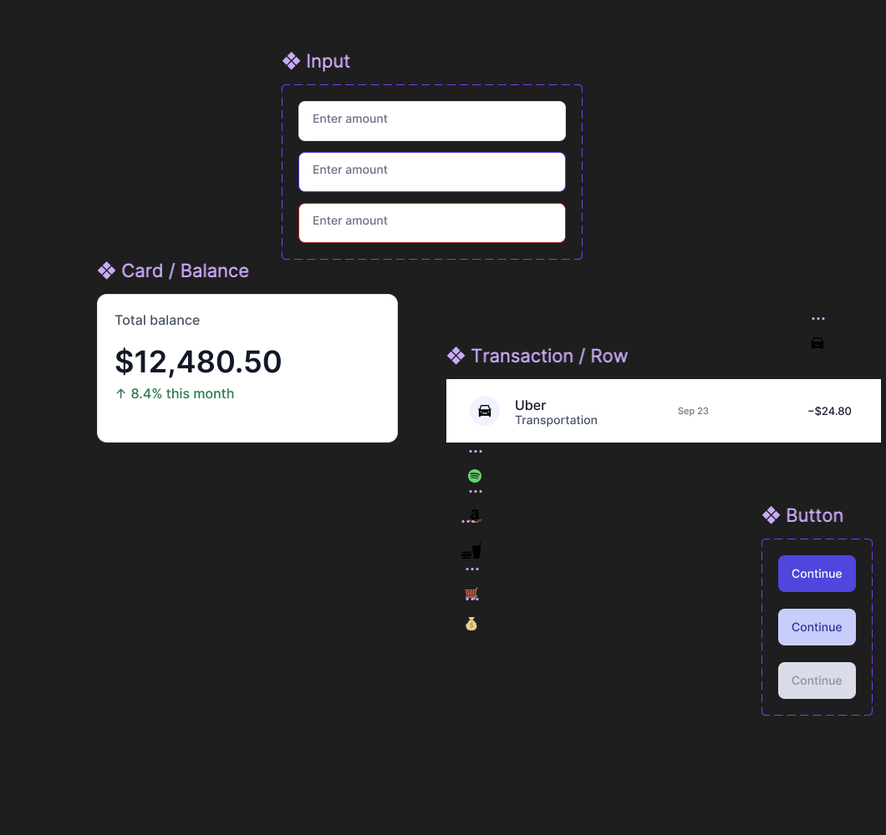

Personal finance is complex.
Its interface shouldn't be.
Balances, expenses, transfers, and trends often compete for attention. Aura is a self-initiated desktop banking concept exploring how information hierarchy and reusable interaction patterns can make everyday financial tasks feel more approachable.
Understand at a glance
Prioritize available balance, recent activity, and actionable summaries on the home screen.
Move with confidence
Structure funding, transfers, and expense entry as clear, step-based tasks.
Make sense of patterns
Translate transaction data into understandable trends, categories, and goals.
One connected financial workspace.
Rather than designing isolated screens, I mapped a small ecosystem of related tasks around a persistent navigation model and shared content patterns.
01 / Overview
Balances, recent transactions, shortcuts, goals.

02 / Transactions
Searchable activity, categories, expense entry.

03 / Analytics
Spending trends, breakdowns, monthly comparison.

Make the next step obvious.
In the Send Money flow, recipients, amount, funding account, and fees are grouped into distinct areas. A review step is presented before confirmation, supporting informed decisions without implying a real transaction is processed.
One primary action per moment.
Funding and expense recording use a consistent visual structure: clearly labeled fields, selected states, and a prominent action at the end. Secondary information stays available without dominating the form.


Capture information without clutter.
The expense form separates essential inputs from optional notes and receipt upload. Labels, input groups, and action placement follow patterns shared with other Aura screens.
Calm is a system,
not a decoration.
Aura uses a restrained lavender palette and an Inter type hierarchy to support scanning, separation, and consistent emphasis. Decorative holographic forms provide personality without replacing functional cues.
Thoughtful typography makes balances, actions, and insights easier to scan.
Typography scale based on the Figma documentation provided. Palette shown as a visual reference, not verified design tokens.
Designed as a system.
Not a collection of screens.
Aura is built around shared foundations: primitive and semantic color variables, consistent component patterns, and clear interaction states. These choices help the Dashboard, Transactions, and Analytics feel like one connected product.
Meaningful color, not hard-coded decoration.
I organized the Figma color system into two layers. Primitive variables define the base palette, while semantic variables map colors to their intended roles — background, text, actions, borders, status feedback, and AI accents.
This separation makes the interface easier to maintain and creates a clearer foundation for future updates without requiring every screen to be edited independently.


One component language, across every task.
The library includes input fields, buttons, balance cards, and transaction rows. Rather than redesigning these elements for each screen, I use shared visual rules for hierarchy, spacing, labels, and action emphasis.
Button and input examples demonstrate distinct visual states. Transaction rows use a repeatable layout for merchant information, category, date, and amount — with room for an AI suggested label when a classification needs review.
The screenshots show component explorations and documented states; further interaction, responsive, and accessibility testing would be part of a future iteration.

Suggestions should be easy to question.
Aura treats AI assistance as a transparent layer, not an invisible decision-maker. Suggested transaction categories are labeled, and the Review Category interaction allows people to confirm or change a classification.
The same principle informs subscription alerts: the interface surfaces a potential cost change, shows the estimated impact, and invites users to explore options before making a decision.
Design principle: AI should support financial decisions without removing user control.

From visual consistency to robust behavior.
Next, I would expand keyboard and focus states, document responsive layout rules, test the category-correction flow, and measure text and UI contrast against WCAG criteria. These are future validation steps, not completed test results.
Designed as one experience.
Three primary views carry the information architecture; focused task screens extend the same system to everyday money movement.
Overview
Clear balance, recent activity, quick actions, and savings progress.
Transactions
A searchable list that makes financial history easier to inspect.
Analytics
Spending trends and categories contextualize the numbers.
From polished screens to product thinking.
Aura helped me work through the relationship between screen-level decisions and system-level consistency: hierarchy, states, navigation, and repeatable form patterns.
This is an independent concept, not a shipped banking product. I have not claimed user interviews, usability results, or business impact. Next I would test key flows, evaluate accessibility and keyboard behavior, and refine components based on feedback.
See how Aura
moves.
Explore the connected screens in the Figma prototype.
Open interactive prototype ↗